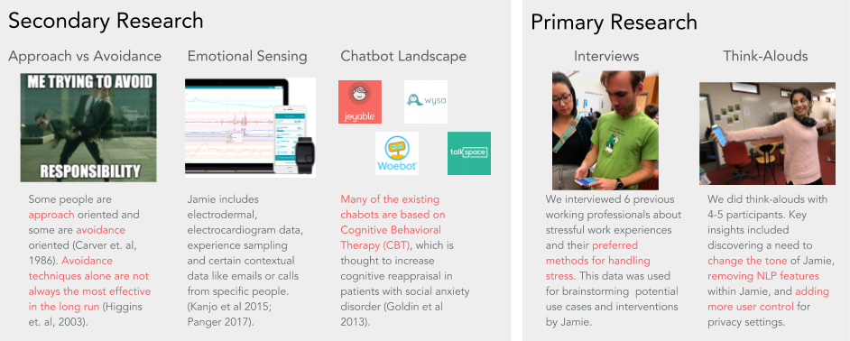
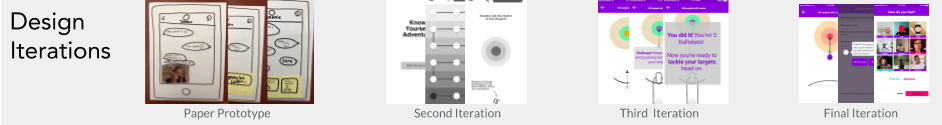

To get a sense of the current chat capabilities on the market, we looked at other prominent chatbots. Most chatbots typically lead users through a guided chat to understand user’s current emotion and provide some sort of intervention. Many of these applications are based on Cognitive Behavioral Therapy (CBT). We also looked at emotional sensing techniques. We found that there are three types of emotional sensing data collected: user input, contextual data and physiological data. Jamie includes electrodermal, electrocardiogram data, experience sampling and certain contextual data like emails or calls from specific people (Kanjo et al 2015; Panger 2017). Finally, we wanted to get a better understanding of how we could regulate the sensed emotions. We found that people differ in their strategies for achieving goals, in this case coping with stress: some are approach oriented and some are avoidance oriented. Generally, neither is good or bad, with caveats (Higgens et al 2003). Literature has also shown that avoidance techniques alone are not always the most effective in the long run, but can be paired with longer-term approach techniques. Therefore, it’s important to offer people ways to avoid and approach to be effective in de-stressing strategies.
We created screens that allow users to go through four different scenarios that include four use cases we concluded from the results of our last user test. Within each scenario, we incorporated relatively complete activity follow so that the user test could go more smoothly with stories that made sense, and a prototype that was self-explanatory. In this case, testers would be able to mainly focus on evaluating the features of the intervention we designed, instead of being confused of unclear scenarios or interactions. We took significant care to make sure that each screen was visually consistent with previous interactions and with the branding we have given to Jamie. The onboarding tutorial gives the first indication of how the user is expected to interact with Jamie. We introduce the potential of Jamie’s emotional range during this process, emphasized by the rainbow color theme. We then introduced different colors for Jamie based on the activity being done by the user. For example, a breathing game has a purple Jamie while yoga has a blue Jamie. This continues to emphasize Jamie’s emotional range, like the user’s emotional range, throughout the user’s interaction with the app. Jamie is also controllable. It is critical to our design that users are aware that they can control what data Jamie uses and how Jamie reacts to various situations. For that reason, we made a highly detailed user preferences flow to take users through all those options.
